General framework¶
Parsimony comprise three principal parts: algorithms, functions and estimators.
- functions define the loss functions and penalties, and combination of those, that are to be minimised. These represent the underlying mathematical problem formulations.
- algorithms define minimising algorithms (e.g., Fast Iterative Shrinkage-Thresholding Algorithm (FISTA) [FISTA2009], COntinuation of NESTerov’s smoothing Algorithm (CONESTA), Excessive Gap Method, etc.) that are used to minimise a given function.
- estimators define a combination of functions and an algorithm. This is the higher-level entry-point for the user. Estimators combine a function (loss function plus penalties) with one or more algorithms that can be used to minimise the given function.
Parsimony currently comprise the following parts:
- Functions
- Loss functions
- Linear regression
- Logistic regression
- Penalties
- L1 (Lasso)
- L2 (Ridge)
- Total Variation (TV)
- Overlapping group lasso (GL)
- Loss functions
- Algorithms
- Iterative Shrinkage-Thresholding Algorithm (ISTA)
- Fast Iterative Shrinkage-Thresholding Algorithm (FISTA)
- COntinuation of NESTerov’s smoothing Algorithm (CONESTA)
- Excessive Gap Method
- Estimators
- LinearRegression
- Lasso
- ElasticNet
- LinearRegressionL1L2TV
- LinearRegressionL1L2GL
- LogisticRegressionL1L2TV
- LogisticRegressionL1L2GL
- LinearRegressionL2SmoothedL1TV
Estimators¶
Simulated dataset for regression¶
We build a simple simulated dataset for the regression problem 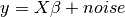:
import numpy as np
import parsimony.utils.start_vectors as start_vectors
np.random.seed(42)
# Three-dimensional matrix is defined as:
shape = (4, 4, 4)
# The number of samples is defined as:
num_samples = 50
# The number of features per sample is defined as:
num_ft = shape[0] * shape[1] * shape[2]
# Define X randomly as simulated data
X = np.random.rand(num_samples, num_ft)
# Define beta randomly
start_vector = start_vectors.RandomStartVector(normalise=False,
limits=(-1, 1))
beta = start_vector.get_vector(num_ft)
beta = np.sort(beta, axis=0)
beta[np.abs(beta) < 0.2] = 0.0
# Define y by adding noise
y = np.dot(X, beta) + 0.1 * np.random.randn(num_samples, 1)
In later sessions, we want to discover  using different loss
functions.
using different loss
functions.
Linear regression¶
Knowing  and
and  , we want to find by
minimizing the OLS loss function. Note that the defaulyt option is to minimize the mean squared error and not the sum squared error.
, we want to find by
minimizing the OLS loss function. Note that the defaulyt option is to minimize the mean squared error and not the sum squared error.
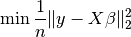
import parsimony.estimators as estimators
ols_estimator = estimators.LinearRegression()
ols_estimator.fit(X, y)
print "Estimated beta error =", np.linalg.norm(ols_estimator.beta - beta)
Ridge regression (L2 penalty)¶
We add an 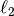 constraint with ridge regression coefficient 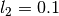 and minimise
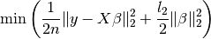
import parsimony.estimators as estimators
l2 = 0.1 # l2 ridge regression coefficient
ridge_estimator = estimators.RidgeRegression(l2)
ridge_estimator.fit(X, y)
print "Estimated beta error =", np.linalg.norm(ridge_estimator.beta - beta)
Lasso regression (L1 penalty)¶
Similarly, you can use an  penalty and minimise
penalty and minimise
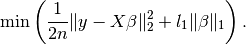
import parsimony.estimators as estimators
l1 = 0.1 # l1 lasso coefficient
lasso_estimator = estimators.Lasso(l1)
lasso_estimator.fit(X, y)
print "Estimated beta error =", np.linalg.norm(lasso_estimator.beta - beta)
Elastic net regression (L1 + L2 penalties)¶
You can combine and penalties with coefficients 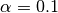 (global penalty) and 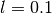 ( ratio) and minimise
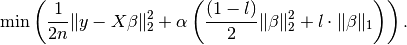
import parsimony.estimators as estimators
alpha = 0.1 # global penalty
l = 0.1 # l1 ratio (lasso)
enet_estimator = estimators.ElasticNet(l=l, alpha=alpha)
enet_estimator.fit(X, y)
print "Estimated beta error =", np.linalg.norm(enet_estimator.beta - beta)
Elastic net regression + TV (L1 + L2 + TV penalties)¶
You can combine , and TV penalties with coefficients 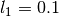, and 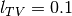 and minimise
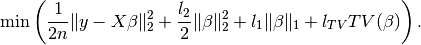
import parsimony.estimators as estimators
import parsimony.functions.nesterov.tv as tv_helper
l1 = 0.1 # l1 penalty
l2 = 0.1 # l2 penalty
tv = 0.1 # tv penalty
A, n_compacts = tv_helper.linear_operator_from_shape(shape) # Memory allocation for TV
tvenet_estimator = estimators.LinearRegressionL1L2TV(l1=l1, l2=l2, tv=tv, A=A)
tvenet_estimator.fit(X, y)
print "Estimated beta error =", np.linalg.norm(tvenet_estimator.beta - beta)
Elastic net regression + Group Lasso (L1 + L2 + GL penalties)¶
We change the 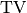 constraint to an overlapping group lasso constraint, 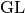, and instead minimise
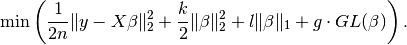
import parsimony.estimators as estimators
import parsimony.algorithms as algorithms
import parsimony.functions.nesterov.gl as gl
k = 0.0 # l2 ridge regression coefficient
l = 0.1 # l1 lasso coefficient
g = 0.1 # group lasso coefficient
groups = [range(0, 2 * num_ft / 3), range(num_ft/ 3, num_ft)]
A = gl.linear_operator_from_groups(num_ft, groups)
estimator = estimators.LinearRegressionL1L2GL(
k, l, g, A=A,
algorithm=algorithms.proximal.FISTA(),
algorithm_params=dict(max_iter=1000))
res = estimator.fit(X, y)
print "Estimated beta error =", np.linalg.norm(estimator.beta - beta)
Simulated dataset for classication¶
import numpy as np
np.random.seed(42)
# A three-dimensional matrix is defined as:
shape = (4, 4, 4)
# The number of samples is defined as:
num_samples = 50
# The number of features per sample is defined as:
num_ft = shape[0] * shape[1] * shape[2]
# Define X randomly as simulated data
X = np.random.rand(num_samples, num_ft)
# Define y as zeros or ones
y = np.random.randint(0, 2, (num_samples, 1))
Logistic regression¶
Knowing and , we want to find the weight vector
by minimizing the logistic regression loss function
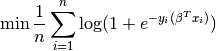
import parsimony.estimators as estimators
lr_estimator = estimators.LogisticRegression()
lr_estimator.fit(X, y)
print "Estimated prediction rate =", lr_estimator.score(X, y)
Ridge logistic regression (L2 penalty)¶
We add an constraint with ridge coefficient and minimise

Note that there is not specfific estimator, but you can use the generic LogisticRegressionL1L2TV estimator with null 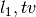 coefficient
import parsimony.estimators as estimators
import parsimony.functions.nesterov.tv as tv_helper
l2 = 0.1 # l2 ridge regression coefficient
A, n_compacts = tv_helper.linear_operator_from_shape(shape)
ridge_lr_estimator = estimators.LogisticRegressionL1L2TV(l1=0, l2=l2, tv=0, A=A)
ridge_lr_estimator.fit(X, y)
print "Estimated prediction rate =", ridge_lr_estimator.score(X, y)
Ridge + Lasso logistic regression (L1 + L2 penalties)¶
Similarly, you can add an constraint and a
constraint with coefficients and and instead
minimise:
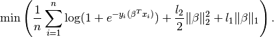
import parsimony.estimators as estimators
import parsimony.functions.nesterov.tv as tv_helper
l1 = 0.1 # l1 lasso coefficient
l2 = 0.1 # l2 ridge regression coefficient
A, n_compacts = tv_helper.linear_operator_from_shape(shape)
enet_lr_estimator = estimators.LogisticRegressionL1L2TV(l1=l1, l2=l2, tv=0, A=A)
enet_lr_estimator.fit(X, y)
print "Estimated prediction rate =", enet_lr_estimator.score(X, y)
Logistic regression with L1 + L2 and TV penalties¶
Finally, you can add a penalty minimise:

import parsimony.estimators as estimators
import parsimony.functions.nesterov.tv as tv_helper
l1 = 0.1 # l1 lasso coefficient
l2 = 0.1 # l2 ridge regression coefficient
tv = 0.1 # l2 ridge regression coefficient
A, n_compacts = tv_helper.linear_operator_from_shape(shape)
enettv_lr_estimator = estimators.LogisticRegressionL1L2TV(l1=l1, l2=l2, tv=tv, A=A)
enettv_lr_estimator.fit(X, y)
print "Estimated prediction rate =", enettv_lr_estimator.score(X, y)
Logistic regression with L1 + L2 and GL penalties¶
We change the constraint to an overlapping group lasso constraint and instead minimise
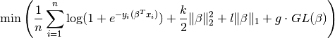
import parsimony.estimators as estimators
import parsimony.algorithms as algorithms
import parsimony.functions.nesterov.gl as gl
k = 0.0 # l2 ridge regression coefficient
l = 0.1 # l1 lasso coefficient
g = 0.1 # group lasso coefficient
groups = [range(0, 2 * num_ft / 3), range(num_ft/ 3, num_ft)]
A = gl.linear_operator_from_groups(num_ft, groups)
estimator = estimators.LogisticRegressionL1L2GL(
k, l, g, A=A,
algorithm=algorithms.proximal.FISTA(),
algorithm_params=dict(max_iter=1000))
res = estimator.fit(X, y)
print "Estimated prediction rate =", estimator.score(X, y)
Algorithms¶
FISTA¶
CONESTA¶
We applied FISTA ([FISTA2009]) in the previous sections. In this section, we switch to CONESTA to minimise the function.
import parsimony.estimators as estimators
import parsimony.algorithms as algorithms
import parsimony.functions.nesterov.tv as tv
k = 0.0 # l2 ridge regression coefficient
l = 0.1 # l1 lasso coefficient
g = 0.1 # tv coefficient
Atv, n_compacts = tv.linear_operator_from_shape(shape)
tvl1l2_conesta = estimators.LinearRegressionL1L2TV(
k, l, g, A=Atv,
algorithm=algorithms.proximal.CONESTA())
res = tvl1l2_conesta.fit(X, y)
print "Estimated beta error =", np.linalg.norm(tvl1l2_conesta.beta - beta)
Excessive gap method¶
The Excessive Gap Method currently only works with the function
“LinearRegressionL2SmoothedL1TV”. For this algorithm to work,  must be
positive.
must be
positive.
import scipy.sparse as sparse
import parsimony.functions.nesterov.l1tv as l1tv
import parsimony.algorithms.primaldual as primaldual
#Atv, n_compacts = tv.linear_operator_from_shape(shape)
#Al1 = sparse.eye(num_ft, num_ft)
A = l1tv.linear_operator_from_shape(shape, num_ft, penalty_start=0)
Al1 = A[0]
Atv = A[1:]
k = 0.05 # ridge regression coefficient
l = 0.05 # l1 coefficient
g = 0.05 # tv coefficient
rr_smoothed_l1_tv = estimators.LinearRegressionL2SmoothedL1TV(
k, l, g, A=A,
algorithm=primaldual.ExcessiveGapMethod(max_iter=1000))
res = rr_smoothed_l1_tv.fit(X, y)
print "Estimated beta error =", np.linalg.norm(rr_smoothed_l1_tv.beta - beta)
References¶
| [FISTA2009] | (1, 2) Amir Beck and Marc Teboulle, A Fast Iterative Shrinkage-Thresholding Algorithm for Linear Inverse Problems, SIAM Journal on Imaging Sciences, 2009. |
| [NESTA2011] | Stephen Becker, Jerome Bobin, and Emmanuel J. Candes, NESTA: A Fast and Accurate First-Order Method for Sparse Recovery, SIAM Journal on Imaging Sciences, 2011. |